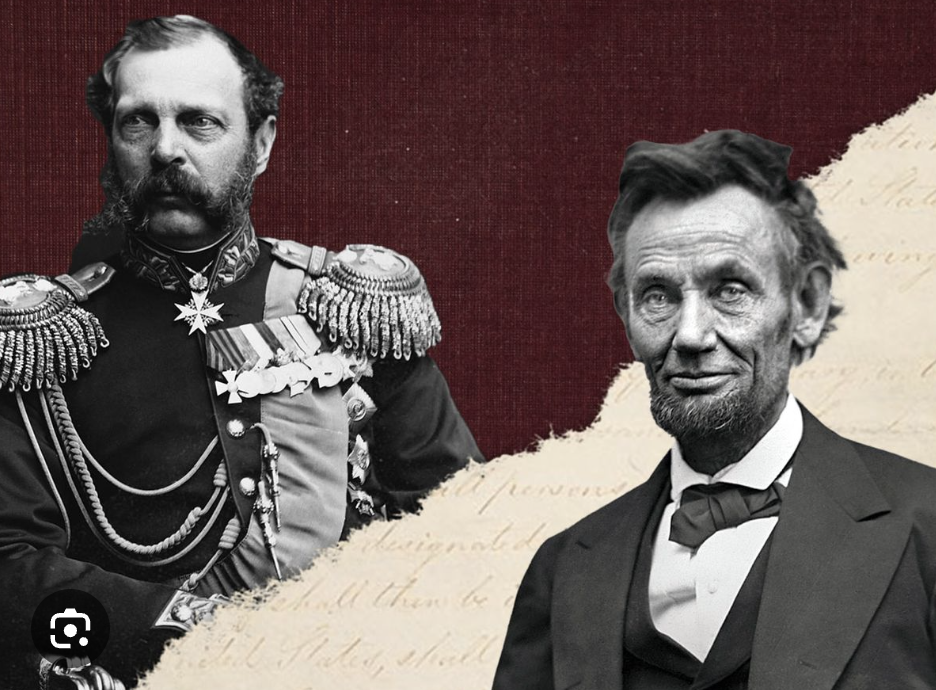

Alexander II of Russia is often described as the “Russian Lincoln” because, like Abraham Lincoln, he carried out a historic act of emancipation that transformed his country’s social system.
Alexander II as the “Russian Lincoln”
Alexander II earned this comparison primarily because he issued the Emancipation Manifesto of 1861, which abolished serfdom in the Russian Empire.
Before this reform, millions of peasants were legally bound to landowners in a system comparable to slavery. By freeing roughly 23 million serfs, Alexander II attempted to modernize Russia’s economy and social structure.
Because Lincoln abolished slavery in the United States during the American Civil War, historians sometimes draw a parallel between the two leaders as emancipators who tried to reform deeply unequal societies.
Both Lincoln and Alexander II were assasinated by their political opponents.

Alexander II in the film Turkish Gambit
In the novel The Turkish Gambit (and its film adaptation The Turkish Gambit), Alexander II appears as a secondary historical character during the events of the Russo-Turkish War.
His role in the story is mostly symbolic and political rather than central to the action:
He represents the Russian imperial authority directing the war effort.
His presence heightens the stakes of the espionage plot, since enemy intelligence operations threaten Russian military success.
The protagonist, detective Erast Fandorin, works to uncover a spy network whose actions could mislead the Russian command and indirectly undermine the tsar’s campaign.
Thus Alexander II functions as a historical backdrop figure whose political leadership frames the espionage narrative.